Finding Alignments Between Interpretable Causal Variables and Distributed Neural Representations
Atticus Geiger˚♢ , Zhengxuan Wu* , Christopher Potts, Thomas Icard, and Noah D. Goodman Pr(Ai)2 R Group♢ Stanford University
{atticusg, wuzhengx, cgpotts, icard, ngoodman}@stanford.edu
Editors: Francesco Locatello and Vanessa Didelez
Abstract
Causal abstraction is a promising theoretical framework for explainable artificial intelligence that defines when an interpretable high-level causal model is a faithful simplification of a low-level deep learning system. However, existing causal abstraction methods have two major limitations: they require a brute-force search over alignments between the high-level model and the low-level one, and they presuppose that variables in the high-level model will align with disjoint sets of neurons in the low-level one. In this paper, we present distributed alignment search (DAS), which overcomes these limitations. In DAS, we find the alignment between high-level and low-level models using gradient descent rather than conducting a brute-force search, and we allow individual neurons to play multiple distinct roles by analyzing representations in non-standard bases— distributed representations. Our experiments show that DAS can discover internal structure that prior approaches miss. Overall, DAS removes previous obstacles to uncovering conceptual structure in trained neural nets.
1. Introduction
Can an interpretable symbolic algorithm be used to faithfully explain a complex neural network model? This is a key question for interpretability; a positive answer can provide guarantees about how the model will behave, and a negative answer could lead to fundamental concerns about whether the model will be safe and trustworthy.
Causal abstraction provides a mathematical framework for precisely characterizing what it means for any complex causal system (e.g., a deep learning model) to implement a simpler causal system (e.g., a symbolic algorithm) (Rubenstein et al., 2017; Beckers et al., 2019; Massidda et al., 2023). For modern AI models, the fundamental operation for assessing whether this relationship holds in practice has been the interchange intervention (also known as activation patching), in which a neural network is provided a ‘base’ input, and sets of neurons are forced to take on the values they would have if different ‘source’ inputs were processed (Geiger et al., 2020; Vig et al., 2020; Finlayson et al., 2021; Meng et al., 2022). The counterfactuals that these interventions create are the basis for causal inferences about model behavior.
Geiger et al. (2021) show that the relevant causal abstraction relation obtains when interchange interventions on aligned high-level variables and low-level variables have equivalent effects. This ideal relationship rarely obtains in practice, but the proportion of interchange interventions with the same effect ( interchange intervention accuracy ; IIA) provides a graded notion, and Geiger et al. (2023) formally ground this metric in the theory of approximate causal abstraction. Geiger et al. also use causal abstraction theory as a unified framework for a wide range of recent intervention-based analysis methods (Vig et al., 2020; Csordás et al., 2021; Feder et al., 2021; Ravfogel et al., 2020;
- Equal contribution.
Elazar et al., 2020; De Cao et al., 2021; Abraham et al., 2022; Olah et al., 2020; Olsson et al., 2022; Chan et al., 2022).
Causal abstraction techniques have been applied to diverse problems (Geiger et al., 2019, 2020; Li et al., 2021; Huang et al., 2022). However, previous applications have faced two central challenges. First, causal abstraction requires a computationally intensive brute-force search process to find optimal alignments between the variables in the high-level model and the states of the low-level one. Where exhaustive search is intractable, we risk missing the best alignment entirely. Second, these prior methods are localist : they artificially limit the space of possible alignments by presupposing that high-level causal variables will be aligned with disjoint groups of neurons. There is no reason to assume this a priori, and indeed much recent work in model explanation (see especially Ravfogel et al. 2020, 2022; Elazar et al. 2020; Olah et al. 2020; Olsson et al. 2022) is converging on the insight of Smolensky (1986), Rumelhart et al. (1986), and McClelland et al. (1986) that individual neurons can play multiple conceptual roles. Smolensky (1986) identified distributed neural representations as “patterns” consisting of linear combinations of unit vectors.
In the current paper, we propose distributed alignment search (DAS), which overcomes the above limitations of prior causal abstraction work. In DAS, we find the best alignment via gradient descent rather than conducting a brute-force search. In addition, we use distributed interchange interventions , which are “soft” interventions in which the causal mechanisms of a group of neurons are edited such that (1) their values are rotated with a change-of-basis matrix, (2) the targeted dimensions of the rotated neural representation are fixed to be the corresponding values in the rotated neural representation created for the source inputs, and (3) the representation is rotated back to the standard neuron-aligned basis. The key insight is that viewing a neural representation through an alternative basis that is not aligned with individual neurons can reveal interpretable dimensions (Smolensky, 1986).
In our experiments, we evaluate the capabilities of DAS to provide faithful and interpretable explanations with two tasks that have obvious interpretable high-level algorithmic solutions with two intermediate variables. In both tasks, the distributed alignment learned by DAS is as good or better than both the closest localist alignment and the best localist alignment in a brute-force search.
In our first set of experiments, we focus on a hierarchical equality task that has been used extensively in developmental and cognitive psychology as a test of relational reasoning (Premack, 1983; Thompson et al., 1997; Geiger et al., 2022a): the inputs are sequences r w, x, y, z s, and the label is given by p w “ x q “ p y “ z q. We train a simple feed-forward neural network on this task and show that it perfectly solves the task. Our key question: does this model implement a program that computes w “ x and y “ z as intermediate values, as we might hypothesize humans do? Using DAS, we find a distributed alignment with 100% IIA. In other words, the network is perfectly abstracted by the high-level model; the distinction between the learned neural model and the symbolic algorithm is thus one of implementation.
Our second task models a natural language inference dataset (Geiger et al., 2020) where the inputs are premise and hypothesis sentences p p, h q that are identical but for the words wp and wh ; the label is either entails ( p makes h true) or contradicts / neutral ( p makes h false). We fine-tune a pretrained language model to perfectly solve the task. With DAS, we find a perfect alignment (100% IIA) to a causal model with a binary variable for the entailment relation between the words wp and wh (e.g., dog entails mammal ).
In both our sets of experiments, the DAS analyses reveal perfect abstraction relations. However, we also identify an important difference between them. In the NLI case, the entailment relation can
be decomposed into representations of wp and wh . What appears to be a representation of lexical entailment is, in this case, a “data structure” containing two representations of word identity, rather than an encoding of their entailment relation. By contrast, the hierarchical equality models learn representations of w “ x and y “ z that cannot be decomposed into representations of w , x , y and z . In other words, these relations are entirely abstracted from the entities participating in the relation; DAS reveals that the neural network truly implements a symbolic, tree-structured algorithm.
2. Related Work
A theory of causal abstraction specifies exactly when a ‘high-level causal model’ can be seen as an abstract characterization of some ‘low-level causal model’ (Iwasaki and Simon, 1994; Chalupka et al., 2017; Rubenstein et al., 2017; Beckers et al., 2019). The basic idea is that high-level variables are associated with (potentially overlapping) sets of low-level variables that summarize their causal mechanisms with respect to a set of hard or soft interventions (Massidda et al., 2023). In practice, a graded notion of approximate causal abstraction is often more useful (Beckers et al., 2019; Rischel and Weichwald, 2021; Geiger et al., 2023).
Geiger et al. (2023) argue that causal abstraction is a generic theoretical framework for providing faithful (Jacovi and Goldberg, 2020; Lyu et al., 2022) and interpretable (Lipton, 2018) explanations of AI models and show that LIME (Ribeiro et al., 2016), causal effect estimation (Abraham et al., 2022; Feder et al., 2021), causal mediation analysis (Vig et al., 2020; Csordás et al., 2021; De Cao et al., 2021), iterated nullspace projection (Ravfogel et al., 2020; Elazar et al., 2020), and circuit-based explanations (Olah et al., 2020; Olsson et al., 2022; Wang et al., 2022; Chan et al., 2022) can all be understood as causal abstraction analysis.
Interchange intervention training (IIT) objectives are minimized when a high-level causal model is an abstraction of a neural network under a given alignment (Geiger et al., 2022b; Wu et al., 2022; Huang et al., 2022). In this paper, we use IIT objectives to learn an alignment between a high-level causal model and a deep learning model.
3. Methods
We focus on acyclic causal models (Pearl, 2001; Spirtes et al., 2000) and seek to provide an intuitive overview of our method. An acyclic causal model consists of input, intermediate, and output variables , where each variable has an associated set of values it can take on and a causal mechanism that determine the value of the variable based on the value of its causal parents. For a simple running example, we modify the boolean conjunction models of Geiger et al. (2022b) to reveal key properties of DAS. A causal model B for this problem can be defined as below, where the inputs and outputs are booleans T and F. Alongside B , we also define a causal model N of a linear feed-forward neural network that solves the task. Here we show B , N , and the parameters of N :
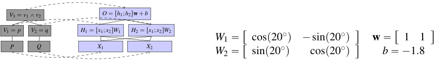
The model N predicts T if O ą 0 and F otherwise. This network solves the boolean conjunction problem perfectly in that all pairs of input boolean values are mapped to the intended output.
An input x of a model M determines a unique total setting M p x q of all the variables in the model. The inputs are fixed to be x and the causal mechanisms of the model determine the values of
the remaining variables. We denote the values that M p x q assigns to the variable or variables Z as GETVALUES Z p M p x qq. For example, GETVALUES V 3p B prT , Fsqq “ F.
3.1. Interventions
Interventions are a fundamental building block of causal models, and of causal abstraction analysis in particular. An intervention I Ð i is a setting i of variables I . Together, an intervention and an input setting x of a model M determine a unique total setting that we denote as M I Ð i p x q. The inputs are fixed to be x , and the causal mechanisms of the model determine the values of the non-intervened variables, with the intervened variables I being fixed to i .
We can define interventions on both our causal model B and our neural model N . For example, BV 1ÐTprF , Tsq is our boolean model when it processes input rF , Ts but with variable V 1 set to T. This has the effect of changing the output value to T. Similarly, whereas N pr0 , 1sq leads to an intermediate values h 1 “ ´0 . 34 and h 2 “ 0 . 94 and output value ´1 . 2, if we compute Nh 1Ð1 . 34pr0 , 1sq, then the output value is 0 . 48. This has the effect of changing the predicted value to T, because 0 . 48 ą 0.
3.2. Alignment
In causal abstraction analysis, we ask whether a specific low-level model like N implements a high-level algorithm like B . This is always relative to a specific alignment of variables between the two models. An alignment Π “ ptΠ X u X , t τX u X q assigns to each high-level variable X a set of low-level variables Π X and a function τX that maps from values of the low-level variables in Π X to values of the aligned high-level variable X . One possible alignment between B and N is shown in the diagram above: Π is depicted by the dashed lines connecting B and N .
We immediately know what the functions for high-level input and output variables are. For the inputs, T is encoded as 1 and F is encoded as 0, meaning τP p1q “ τQ p1q “ T and τP p0q “ τQ p0q “ F. For the output, the network only predicts T if y ą 0, meaning τV 3p x q “ T if x ą 0, else F. This is simply a consequence of how a neural network is used and trained. The functions for high-level intermediate variables τV 1p x q and τV 2p x q must be discovered and verified experimentally.
3.3. Constructive Causal Abstraction
Relative to an alignment like this, we can define abstraction:
Definition 1 (Constructive Causal Abstraction) A high-level causal model H is a constructive abstraction of a low-level causal model L under alignment Π exactly when the following holds for every low-level input setting x and low-level intervention I Ð i :
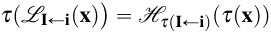
H being a causal abstraction of L under Π guarantees that the causal mechanism for each high-level variable X is a faithful rendering of the causal mechanisms for the low-level variables in Π X .
To assess the degree to which a high-level model is a constructive causal abstraction of a low-level model, we perform interchange interventions:
Definition 2 (Interchange Interventions) Given source input settings t s j u1k, and non-overlapping sets of intermediate variables t X j u1kfor model M , define the interchange intervention as the model
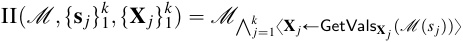
whereŹk j “1x¨yconcatenates a set of interventions.
A base input setting can be fed into the resulting model to compute the counterfactual output value. Consider the following interchange intervention:
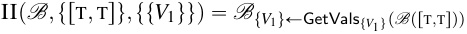
We process a base input and a source input, and then we intervene on a target variable, replacing it with the value obtained by processing the source. Our causal model is fully known, and so we know ahead of time that this interchange intervention yields T. For our neural network, the corresponding behavior is not known ahead of time. The interchange intervention corresponding to the above (according to the alignment we are exploring) is as follows
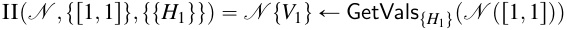
And, indeed, the counterfactual behavior of the model and the network N are unequal:
| _V_1“ T _V_2“ T _V_3“ T _V_1“ T _V_3“ |
_V_2“ T T |
O“ ´ F |
0_._26 |
O“ | 0_._08 |
|---|---|---|---|---|---|
| F T T |
T |
0 H_1“0._6 |
1 H_2“0._94 |
1 H_1“0._6 |
1 H_2“1._28 |
Under the given alignment, the interchange interventions at the low and high level have different effects. Thus, we have a counterexample to constructive abstraction as given in Definition 1. Although N has perfect behavioral accuracy, its accuracy under the counterfactuals created by our interventions is not perfect, and thus B is not a constructive abstraction of N under this alignment.
3.4. Distributed Interventions
The above conclusion is based on the kind of localist causal abstraction explored in the literature to date. As noted in Section 1, there are two risks associated with this conclusion: (1) we may have chosen a suboptimal alignment, and (2) we may be wrong to assume that the relevant structure will be encoded in the standard basis we have implicitly assumed throughout.
If we simply rotate the representation r H 1 , H 2s by ´20˝ to get a new representation r Y 1 ,Y 2s, then the resulting network has perfect behavioral and counterfactual accuracy when we align V 1 and V 2 with Y 1 and Y 2. What this reveals is that there is an alignment, but not in the basis we chose. Since the choice of basis was arbitrary, our negative conclusion about the causal abstraction relation was spurious.
This rotation localizes the information about the first and second argument into separate dimensions. To understand this, observe that the weight matrix of the linear network rotates a two dimensional vector by 20˝ and the rotation matrix rotates the representation by 340˝ . The two matrices are inverses. Because this network is linear, there is no activation function and so rotating the hidden representation “undoes” the transformation of the input by the weight matrix. Under this non-standard basis, the first hidden dimension is equal to the first input argument and the second hidden dimension is equal to the second input argument.
This reveals an essential aspect of distributed neural representations: there is a many-to-many mapping between neurons and concepts, and thus multiple high-level causal variables might be encoded in structures from overlapping groups of neurons (Rumelhart et al., 1986; McClelland et al., 1986). In particular, Smolensky (1986) proposes that viewing a neural representation under a basis
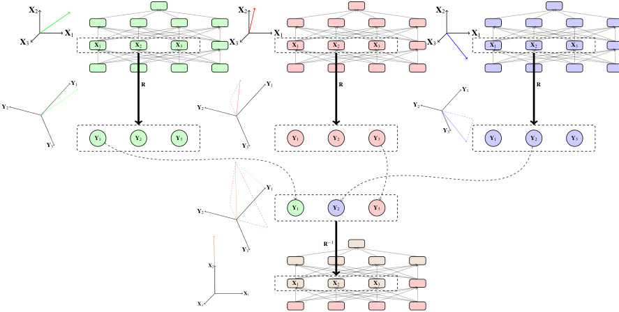
X 2 X 2 X 2
X 1 X 1 X 1
X 3 X 1 X 2 X 3 X 3 X 1 X 2 X 3 X 3 X 1 X 2 X 3
Y 1 R Y 1 R R
Y 1
Y 2 Y 2 Y 2
Y 3
Y 1 Y 2 Y 3 Y 1 Y 2 Y 3 Y 1 Y 2 Y 3
Y 3 Y 3
Y 1
Y 2 Y 1 Y 2 Y 3
R ´1
Y 3
X 2
X 1 X 2 X 3
X 1
X 3
Figure 1: A generic multi-source distributed interchange intervention. The base input and two source inputs create three total settings of a model. The top left (green) and right (blue) total model settings are determined by two source inputs and the middle total model setting (red) is determined by the base input. Three hidden units from each total setting are rotated with an orthogonal matrix R : X Ñ Y . Then we intervene on the rotated representation for the base input and fix two dimensions to be the value they take on for each source input, respectively. Then we unrotate the representation with R´1 and compute a counterfactual total model setting for the base input. In DAS, the orthogonal matrix is found with gradient descent using a high-level causal model to guide the search process.
that is not aligned with individual neurons can reveal the interpretable distributed structure of the neural representations.
To make good on this intuition we define a distributed intervention, which first transforms a set of variables to a vector space, then does interchange on orthogonal sub-spaces, before transforming back to the original representation space.
Definition 3 Distributed Interchange Interventions We begin with a causal model M with input variables S and source input settings t s j uk j “1.LetNbeasubsetofvariablesinM ,the_target variables . Let Y be a vector space with subspaces t Y j uk 0that form an orthogonal decomposition, i.e., Y “Àk j “0Yj.LetRbe an invertible functionR:NÑY.Write_Proj Y jfor the orthogonal projection operator of a vector in Y onto subspace Y j.1 A distributed interchange intervention yields a new model DIIp M , R , t s j uk 1_,tYj_uk 0qwhich is identical to Mexcept that the mechanisms FN(which yield
- Thus, Proj generalizes GetVals to arbitrary vector spaces.
values of N from a total setting) are replaced by:
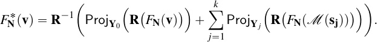
Notice that in this definition the base setting is partially preserved through the intervention (in subspace Y 0) and hence this is a soft intervention on N that rewrites causal mechanisms while maintaining a causal dependence between parent and child.
Under this new alignment, the high-level interchange intervention IIp B, trT , Tsu , tt V 1uuq “ B t V 1uÐGetValst V 1up B prT , Tsqq is aligned with the low-level distributed interchange intervention
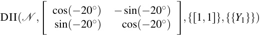
and the counterfactual output behavior of B and N are equal:
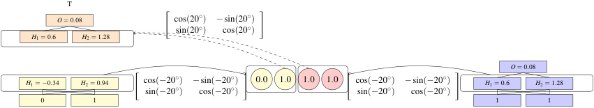
In what follows we will assume that X are already vector spaces (which is true for neural nets) and the functions R are rotation operators. In this case, the subspaces Y j can be identified without loss of generality with those spanned by the first | Y 0| basis vectors for Y 0, the next | Y 1| basis vectors for Y 1, and so on. (The following methods would be well-defined for non-linear transformations, as long as they were invertible and differentiable, but efficient implementation becomes harder.)
3.5. Distributed Alignment Search
The question then arises of how to find good rotations. As we discussed above, previous causal abstraction analyses of neural networks have performed brute-force search through a discrete space of hand-picked alignments. In distributed alignment search (DAS), we find an alignment between one or more high-level variables and disjoint sub-spaces (but not necessarily subsets) of a large neural representation. We define a distributed interchange intervention training objective, use differentiable parameterizations for the space of orthogonal matrices (such as provided by PyTorch), and then optimize the objective with stochastic gradient descent. Crucially, the low-level and high-level models are frozen during learning so we are only changing the alignment.
In the following definition we assume that a neural network specifies an output distribution for a given input, which can then be pushed forward to a distribution on output values of the high-level model via an alignment function τ . We may similarly interpret even a deterministic high-level model as defining a (e.g., delta) distribution on output values. We make use of these distributions, after interchange intervention, to define a differentiable loss for the rotation matrix which aligns intermediate variables.
Definition 4 Distributed Interchange Intervention Training Objective Begin with a low-level neural network L , with low-level input settings Inputs L, a high-level algorithm H , with high-level output
settings Out H, and an alignment τ for their input and output variables. Suppose we want to align intermediate high level variables X j P Vars H with rotated subspaces Y j of a neural representation N Ă Vars L with learned rotation matrix Rθ : N Ñ Y .
In general, we can define a training objective using any differentiable loss function Loss that quantifies the distance between two total high-level settings.
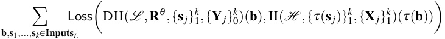
For our experiments, we compute the cross entropy loss CEp¨ , ¨q between the high-level output distribution Pp out H | H p τ p b qqq and the push-forward under τ of the low-level output distribution Pτ p out H | L p b qq . The overall objective is:
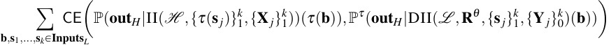
While we still have discrete hyperparameters p N , | Y 0| ,..., | Y k |q—the target population and the dimensionality of the sub-spaces used for each high-level variable—we may use stochastic gradient descent to determine the rotation that minimizes loss, thus yielding the best distributed alignment between L and H .
3.6. Approximate Causal Abstraction
Perfect causal abstraction relationships are unlikely to arise for neural networks trained to solve complex empirical tasks. We use a graded notion of accuracy:
Definition 5 Distributed Interchange Intervention Accuracy Given low-level and high-level causal models L and H with alignment pΠ , τ q , rotation R : N Ñ Y , and orthogonal decomposition t Y j uk 0. If we let Inputs L be low-level input settings and t X j u1kbehigh-levelintermediatevariablesthe interchange intervention accuracy (IIA) is as follows
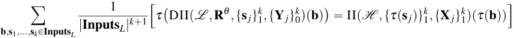
IIA is the proportion of aligned interchange interventions that have equivalent high-level and lowlevel effects. In our example with N and A , IIA is 100% and the high-level model is a perfect abstraction of the low-level model (Def. 1). When IIA is α ă100%, we rely on the graded notion of α-on-average approximate causal abstraction (Geiger et al., 2023), which coincides with IIA.
3.7. General Experimental Setup
We illustrate the value of DAS by analyzing feed-forward networks trained on a hierarchical equality and pretrained Transformer-based language models (Vaswani et al., 2017) fine-tuned on a natural language inference task. Our evaluation paradigm is as follows:
-
Train the neural network N to solve the task. In all experiments, the neural models achieve perfect accuracy on both training and testing data.
-
Create interchange intervention training datasets using a high-level causal model. Each example consists of a base input, one or more source inputs, high-level causal variables
targetted for intervention, and a counterfactual gold label that will be output by the network if the interchange intervention has the hypothesized effect on model behavior. This gold label is a counterfactual output of the high-level model we will align with the network. (See Appendix A.1 for details)
-
Optimize an orthogonal matrix to learn a distributed alignment for each high-level model that maximizes IIA using the training objective in Def. 4. We experiment with different hidden dimension sizes for our low-level model and different intervention site sizes (dimensionality of low-level subspaces) and locations (the layer where the intervention happens). (See Appendix A.2 for details)
-
Evaluate a baseline that brute-force searches through a discrete space of alignments and selects the alignment with the highest IIA. We search the space of alignments by aligning each highlevel variable with groups of neurons in disjoint sliding windows. (See Appendix A.3 for details)
-
Evaluate the localist alignment “closest” to the learned distributed alignment. The rotation matrix for the localist alignment will be axis-aligned with the standard basis, possibly permuting and reflecting unit axes. (See Appendix A.4 for details)
-
Determine whether each distributed representation aligned with high-level variables can be decomposed into multiple representations that encode the identity of the input values to the variable’s causal mechanism. We do this by learning a second rotation matrix that decomposes learned distributed representation, holding the first rotation matrix fixed. (See Appendix A.5 for details)
The codebase used to run these experiments is at2 . We have replicated the hierarchical equality experiment using the Pyvene library at3 .
4. Hierarchical Equality Experiment
We now illustrate the power of DAS for analyzing networks designed to solve a hierarchical equality task. We concentrate on analyzing a trained feed-forward network.
A basic equality task is to determine whether a pair of objects are the same ( x “ y ). A hierarchical equality task is to determine whether a pair of pairs of objects have identical relations: p w “ x q “ p y “ z q. Specifically, the input to the task is two pairs of objects and the output is True if both pairs are equal or both pairs are unequal and False otherwise. For example, p A, A, B, B q and p A, B,C, D q are both assigned True while p A, B,C,C q is assigned False.
4.1. Low-Level Neural Model
We train a three-layer feed-forward network with ReLU activations to perform the hierarchical equality task. Each input object is represented by a randomly initialized vector. Specifically, our model has the following architecture where k is the number of layers.
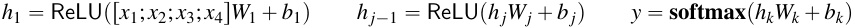
The input vectors are in Rn , the biases are in R4n , and the weights are in R4_n_ˆ4n . We evaluate our model on held-out random vectors unseen during training, as in Geiger et al. 2022a.
- https://github.com/atticusg/InterchangeInterventions/tree/zen
- https://github.com/stanfordnlp/pyvene/blob/main/tutorials/advanced_tutorials/DAS_Main_ Introduction.ipynb
| Hidden size | Intervention size | Both E Layer 1 |
quality Rel Layer 2 |
ations Layer 3 |
Left E Layer 1 |
quality Re Layer 2 |
lation Layer 3 |
Identity Layer 1 |
of First Ar Layer 2 |
gument Layer 3 |
Identity Subspace of Left Equality Layer 1 |
|---|---|---|---|---|---|---|---|---|---|---|---|
| N | “16 | 1 | 0.88 | 0.51 | 0.50 | 0.85 | 0.54 | 0.50 | 0.51 | 0.52 | |
| N | “16 | 2 | 0.97 | 0.54 | 0.50 | 0.85 | 0.55 | 0.50 | 0.50 | 0.52 | |
| N | “16 | 8 | 1.00 | 0.57 | 0.50 | 0.90 | 0.56 | 0.50 | 0.52 | 0.53 | |
| N | “32 | 2 | 0.93 | 0.63 | 0.49 | 0.92 | 0.65 | 0.50 | 0.52 | 0.55 | |
| N | “32 | 4 | 0.97 | 0.63 | 0.49 | 0.94 | 0.65 | 0.50 | 0.51 | 0.55 | |
| N | “32 | 16 | 0.99 | 0.67 | 0.53 | 0.99 | 0.65 | 0.50 | 0.49 | 0.55 | |
| Brute-F | orce Search | 0.60 | 0.56 | 0.52 | 0.64 | 0.64 | 0.57 | 0.50 | 0.51 | 0.54 | - |
| Localis | t Alignment | 0.73 | 0.56 | 0.48 | 0.60 | 0.50 | 0.49 | 0.46 | 0.47 | 0.48 | - |
- Table 1: Hierarchical equality alignment learning results. The table can be read as follows: Layer 1 , Layer 2 , and Layer 3 indicate which layer of neurons is targeted, | N | is the number of neurons in a layer, k is the number of neurons aligned with each intermediate variable (red) where our subspace model occupies 2_k_with rounding up to the closest integer, and the values in each cell are interchange intervention accuracies for the learned alignment on training data. We report the best results from three runs with distinct random seeds for training the rotation matrix (the same frozen low-level model is used for each seed).
4.2. High-Level Models
We use DAS to evaluate whether trained neural networks have achieved the natural solution to the hierarchical equality task where the left and right equality relations are computed and then used to predict the final label (Figure 2).
However, evaluating this high-level model alone is insufficient, as there are obviously many other high-level models of this task. To further contextualize our results, we also consider two alternatives: a high-level model where only the equality relation of the first pair is represented and a high-level model where the lone intermediate variable encodes the identity of the first input object (leaving all computation for the final step). These alternative high-level models also solve the task perfectly.
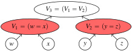
V 3 “ p V 1 “ V 2q
V 1 “ p w “ x q V 2 “ p y “ z q
w x y z
Figure 2: A causal model that computes the hierarchical equality task.
4.3. Discussion
The IIA results achieved by the best alignment for each high-level model can be seen in Table 1. The best alignments found are with the ‘Both Equality Relations’ model that is widely assumed in the cognitive science literature. For all causal models, DAS learns a more faithful alignment (higher IIA) than a brute-force search through localist alignments. This result is most pronounced for ‘Both Equality Relations’, where DAS learns perfect or near-perfect alignments under a number of settings, whereas the best brute-force alignment achieves only 0.60 and the best localist alignment achieves only 0.73. Finally, the distributed representation of left equality could not be decomposed into a representation of the first argument identity. We see this in the very low performance of the ‘Identity Subspace of Left Equality’ results. This indicates that models are truly learning to encode an abstract equality relation, rather than merely storing the identities of the inputs.
| Sentence Pairs | Label | MONLIpp,hq |
|---|---|---|
| premise: A man is talking to someone in a taxi. hypothesis: A man is talking to someone in a car. |
entails | 1 lexrel_Ð GET-LEXRELpp,hq 2 neg_Ð CONTAINS-NOTpp,hq 3 ifneg: |
| premise: The people arenotplaying sitars. hypothesis: The people arenotplaying instruments. |
neutral | 4 return REVERSEp_lexrel_q 5 returnlexrel |
| (a) Two MoNLI examples. | (b)A simple program that solves MoNLI. |
Figure 4: Monotonicity NLI task examples and high-level model.
4.4. Analyzing a Randomly Initialized Network
To calibrate intuitions about our method, we evaluate the ability of DAS to optimize for interchange intervention accuracy on a frozen randomly initialized networks that achieves chance accuracy (50%) on the hierarchical equality task. This investigates the degree to which random causal structures can be used to systematically manipulate the counterfactual behavior of the network. We evaluate networks with different hidden representation sizes while holding the four input vectors fixed at 4 dimensions, under the hypothesis that more hidden neurons create more random structure that DAS can search through. These results are summarized in Table 4.4. Observe that, in small networks, there is no ability to increase interchange intervention accuracy. However, as we increase the size of the hidden representation to be orders of magnitude larger than the input dimension of 16, the interchange intervention accuracy increases. This confirms our hypothesis and serves as a check that demonstrates DAS cannot construct entirely new behaviors from random structure.
| Both |
Equality Relations |
|---|---|
| Hidden size | Intervention size Layer 1 |
| N | |
| N | |
| N | |
| N | |
| N |
Figure 3: DAS on a random network
with a 16 dimension input. An oversized hidden dimension allows DAS to manipulate the model behavior by searching through a large space of random mechanisms.
5. Monotonicity NLI Experiment
In our second experiment, we analyze a BERT model fine-tuned on the Monotonicity Natural Language Inference (MoNLI) benchmark (Geiger et al., 2020). A MoNLI example consists of a premise sentence and hypothesis sentence and the output label is entails when the premise makes the hypothesis true, and neutral otherwise. Two examples are in Figure 4( a ). Every example is such that a single word wp in the premise sentence was changed to a hypernym (more general term) or hyponym (more specific term) wh to create the hypothesis. About half of MoNLI examples contain a negation that scopes over the word replacement site, and the remaining examples have no negation. When no negation is present, the label for a premise–hypothesis pair is the lexical relation. When negation is present, the label for a premise–hypothesis pair is the reverse of the lexical relation.
Lex |
Negation an ical Entail |
d ment |
Lex | ical Entail | ment | Ide | ntity of Lex | eme | Lexeme Subspace of Lexical Entailment |
||
|---|---|---|---|---|---|---|---|---|---|---|---|
| Hidden size | Intervention size | Layer 7 | Layer 9 | Layer 11 | Layer 7 | Layer 9 | Layer 11 | Layer 7 | Layer 9 | Layer 11 | Layer 9 |
| N | “768 | 64 | 0.65 | 0.96 | 0.91 | 0.88 | 1.00 | 0.97 | 0.88 | 0.94 | |
| N | “768 | 128 | 0.65 | 0.99 | 0.92 | 0.88 | 1.00 | 0.99 | 0.89 | 0.93 | |
| N | “768 | 256 | 0.67 | 1.00 | 0.86 | 0.91 | 1.00 | 1.00 | 0.88 | 0.96 | |
| Brute-F | orce Search | 0.60 | 0.56 | 0.52 | 0.64 | 0.64 | 0.57 | 0.50 | 0.51 | 0.54 | - |
| Localis | t Alignment | 0.51 | 0.51 | 0.51 | 0.47 | 0.47 | 0.47 | 0.50 | 0.50 | 0.50 | - |
- Table 2: Monotonicity NLI results. The table can be read as follows: Layer 7 , Layer 9 , and Layer 11 indicate which layer of neurons is targeted, | N | is the number of neurons in a layer, k is the number of neurons aligned with each intermediate variable (red) where our subspace model occupies 2k, and the values in each cell are interchange intervention accuracies for the learned alignment on training data. We report the best results from three runs with distinct random seeds.
5.1. Low-Level Neural Model
We fine-tune an uncased BERT-base model (Devlin et al., 2019) finetuned on the MultiNLI dataset (Williams et al., 2018).4 Our BERT model has 12 layers and 12 heads with a hidden dimension of 768. We concatenate the tokenized sequences of the premise sentence and hypothesis sentence with a rSEPs token. Because of the size of the rotation matrix, we can’t look for distributed representations across all tokens; we look only at the representations of the rCLSs token because the final classification is made from this token’s representation in the last layer.
5.2. High-Level Models
We use DAS to evaluate whether BERT fine-tuned on MoNLI will represent two boolean intermediate variables. The first is an indicator variable for negation, which is true if and only if negation is present in the premise and hypothesis. The second is a variable that is true if wp entails wh . This model is perhaps best expressed as a simple program (Figure 4( b )). Again, we also consider two alternative high-level models to contextualize our results. One model represents only lexical entailment and not negation. The other represents the identity of the premise word wp .
5.3. Results
The IIA results achieved by the best alignment for each high-level model can be seen in Table 2. There is a perfect alignment between fine-tuned BERT and a symbolic algorithm with variables representing the presence of negation and the lexical entailment relation between wp and wh . In Table 2, this is shown by the perfect IIA for layer 9 and intervention size 256, meaning 256 non-standard basis dimensions of the rCLSs token representation in layer 9 of BERT encode the relation between wp and wh and 256 other non-standard basis dimensions encode negation. Across all alignments and intervention types, DAS learns more faithful alignments (higher IIA) than a brute-force search through alignments, and no localist alignment comes close to the learned distributed alignments in terms of IIA.
- The parameters are provided by the Hugging Face
transformerslibrary (Wolf et al., 2019), downloaded from https://huggingface.co/ishan/bert-base-uncased-mnli.
However, the distributed representation of the lexical entailment relation between wp and wh can be nearly perfectly decomposed into two representations that encode the identity of the word wp and the identity of the word wh , respectively. This result is shown by the near perfect IIA in the final column of Table 2. This tells us that what appeared to be a representation of the lexical entailment, was in fact a “data structure” of two word identity representations.
6. Conclusion
We introduce distributed alignment search (DAS), a method to align interpretable causal variables with distributed neural representations. We learn distributed alignments that are more interpretable than localist alignments and do so with a gradient-descent based search method that improves upon the state-of-the-art brute-force search. In our two experiments, we discovered perfect alignments of distributed neural representations to binary high-level variables encoding simple equality and lexical entailment relations. However, when we investigated the substructure of these representations, we found that the lexical entailment representations could be decomposed into sub-representations of word identity. This highlights the need to investigate the causal substructure of neural representations. On the other hand, the presence of perfect representations of simple equality relations that cannot be decomposed into representations of the entities in the relations is a foundational result that should inform our understanding of how and when symbolic and connectionist architectures coexist.
Acknowledgments
This research is supported in part by grants from Open Philanthropy, Meta AI, Amazon, and the Stanford Institute for Human-Centered Artificial Intelligence (HAI).
References
-
Eldar David Abraham, Karel D’Oosterlinck, Amir Feder, Yair Ori Gat, Atticus Geiger, Christopher Potts, Roi Reichart, and Zhengxuan Wu. CEBaB: Estimating the causal effects of real-world concepts on NLP model behavior. arXiv:2205.14140, 2022. URL https://arxiv.org/abs/ 2205.14140.
-
Sander Beckers, Frederick Eberhardt, and Joseph Y. Halpern. Approximate causal abstractions. In Proceedings of The 35th Uncertainty in Artificial Intelligence Conference , 2019.
-
Krzysztof Chalupka, Frederick Eberhardt, and Pietro Perona. Causal feature learning: an overview. Behaviormetrika , 44:137–164, 2017.
-
Lawrence Chan, Adrià Garriga-Alonso, Nicholas Goldowsky-Dill, Ryan Greenblatt, Jenny Nitishinskaya, Ansh Radhakrishnan, Buck Shlegeris, and Nate Thomas. Causal scrubbing: a method for rigorously testing interpretability hypotheses, 2022.
-
Róbert Csordás, Sjoerd van Steenkiste, and Jürgen Schmidhuber. Are neural nets modular? inspecting functional modularity through differentiable weight masks. In 9th International Conference on Learning Representations, ICLR 2021, Virtual Event, Austria, May 3-7, 2021 . OpenReview.net, 2021. URL https://openreview.net/forum?id=7uVcpu-gMD.
-
Nicola De Cao, Leon Schmid, Dieuwke Hupkes, and Ivan Titov. Sparse interventions in language models with differentiable masking. arXiv:2112.06837, 2021. URL https://arxiv.org/abs/ 2112.06837.
-
Jacob Devlin, Ming-Wei Chang, Kenton Lee, and Kristina Toutanova. BERT: Pre-training of deep bidirectional transformers for language understanding. In Proceedings of the 2019 Conference of the North American Chapter of the Association for Computational Linguistics: Human Language Technologies, Volume 1 (Long and Short Papers) , pages 4171–4186, Minneapolis, Minnesota, June 2019. Association for Computational Linguistics. doi: 10.18653/v1/N19-1423. URL https://aclanthology.org/N19-1423.
-
Yanai Elazar, Shauli Ravfogel, Alon Jacovi, and Yoav Goldberg. Amnesic probing: Behavioral explanation with amnesic counterfactuals. In Proceedings of the 2020 EMNLP Workshop BlackboxNLP: Analyzing and Interpreting Neural Networks for NLP . Association for Computational Linguistics, November 2020. doi: 10.18653/v1/W18-5426.
-
Amir Feder, Nadav Oved, Uri Shalit, and Roi Reichart. CausaLM: Causal Model Explanation Through Counterfactual Language Models. Computational Linguistics , pages 1–54, 05 2021. ISSN 0891-2017. doi: 10.1162/coli_a_00404. URL https://doi.org/10.1162/coli_a_00404.
-
Matthew Finlayson, Aaron Mueller, Sebastian Gehrmann, Stuart Shieber, Tal Linzen, and Yonatan Belinkov. Causal analysis of syntactic agreement mechanisms in neural language models. In Association for Computational Linguistics and International Joint Conference on Natural Language Processing (ACL-IJCNLP) , 2021. URL https://aclanthology.org/2021.acl-long.144.
-
Atticus Geiger, Ignacio Cases, Lauri Karttunen, and Christopher Potts. Posing fair generalization tasks for natural language inference. In Proceedings of the 2019 Conference on Empirical Methods in Natural Language Processing and the 9th International Joint Conference on Natural Language Processing (EMNLP-IJCNLP) , pages 4475–4485, Stroudsburg, PA, November 2019. Association for Computational Linguistics. doi: 10.18653/v1/D19-1456. URL https://www.aclweb.org/ anthology/D19-1456.
-
Atticus Geiger, Kyle Richardson, and Chris Potts. Neural natural language inference models partially embed theories of lexical entailment and negation. In Proceedings of the 2020 EMNLP Workshop BlackboxNLP: Analyzing and Interpreting Neural Networks for NLP . Association for Computational Linguistics, November 2020. doi: 10.18653/v1/W18-5426.
-
Atticus Geiger, Hanson Lu, Thomas Icard, and Christopher Potts. Causal abstractions of neural networks. In Advances in Neural Information Processing Systems , volume 34, pages 9574–9586, 2021. URL https://papers.nips.cc/paper/2021/hash/ 4f5c422f4d49a5a807eda27434231040-Abstract.html.
-
Atticus Geiger, Alexandra Carstensen, Michael C Frank, and Christopher Potts. Relational reasoning and generalization using nonsymbolic neural networks. Psychological Review , 2022a. doi: 10.1037/rev0000371. URL https://doi.org/10.1037/rev0000371.
-
Atticus Geiger, Zhengxuan Wu, Hanson Lu, Josh Rozner, Elisa Kreiss, Thomas Icard, Noah Goodman, and Christopher Potts. Inducing causal structure for interpretable neural networks. In Kamalika Chaudhuri, Stefanie Jegelka, Le Song, Csaba Szepesvari, Gang Niu, and Sivan Sabato, editors, Proceedings of the 39th International Conference on Machine Learning , volume 162 of Proceedings of Machine Learning Research , pages 7324–7338. PMLR, 17–23 Jul 2022b. URL https://proceedings.mlr.press/v162/geiger22a.html.
-
Atticus Geiger, Chris Potts, and Thomas Icard. Causal abstraction for faithful interpretation of AI models. arXiv:2106.02997, 2023. URL https://arxiv.org/abs/2106.02997.
-
Jing Huang, Zhengxuan Wu, Kyle Mahowald, and Christopher Potts. Inducing character-level structure in subword-based language models with Type-level Interchange Intervention Training. Ms., Stanford University and UT Austin, 2022. URL https://arxiv.org/abs/2212.09897.
-
Yumi Iwasaki and Herbert A. Simon. Causality and model abstraction. Artificial Intelligence , 67(1): 143–194, 1994.
-
Alon Jacovi and Yoav Goldberg. Towards faithfully interpretable NLP systems: How should we define and evaluate faithfulness? In Dan Jurafsky, Joyce Chai, Natalie Schluter, and Joel R. Tetreault, editors, Proceedings of the 58th Annual Meeting of the Association for Computational Linguistics, ACL 2020, Online, July 5-10, 2020 , pages 4198–4205. Association for Computational Linguistics, 2020. doi: 10.18653/v1/2020.acl-main.386. URL https://doi.org/10.18653/v1/ 2020.acl-main.386.
-
Belinda Z. Li, Maxwell I. Nye, and Jacob Andreas. Implicit representations of meaning in neural language models. In Chengqing Zong, Fei Xia, Wenjie Li, and Roberto Navigli, editors, Proceedings of the 59th Annual Meeting of the Association for Computational Linguistics and the 11th International Joint Conference on Natural Language Processing, ACL/IJCNLP 2021, (Volume 1: Long Papers), Virtual Event, August 1-6, 2021 , pages 1813–1827. Association for Computational Linguistics, 2021. doi: 10.18653/v1/2021.acl-long.143. URL https://doi.org/10.18653/v1/2021.acl-long.143.
-
Zachary C. Lipton. The mythos of model interpretability. Commun. ACM , 61(10):36–43, 2018. doi: 10.1145/3233231. URL https://doi.org/10.1145/3233231.
-
Qing Lyu, Marianna Apidianaki, and Chris Callison-Burch. Towards faithful model explanation in NLP: A survey. CoRR , abs/2209.11326, 2022. doi: 10.48550/arXiv.2209.11326. URL https://doi.org/10.48550/arXiv.2209.11326.
-
Riccardo Massidda, Atticus Geiger, Thomas Icard, and Davide Bacciu. Causal abstraction with soft interventions. In Mihaela van der Schaar, Cheng Zhang, and Dominik Janzing, editors, Conference on Causal Learning and Reasoning, CLeaR 2023, 11-14 April 2023, Amazon Development Center, Tübingen, Germany, April 11-14, 2023 , volume 213 of Proceedings of Machine Learning Research , pages 68–87. PMLR, 2023. URL https://proceedings.mlr.press/v213/ massidda23a.html.
-
J. L. McClelland, D. E. Rumelhart, and PDP Research Group, editors. Parallel Distributed Processing. Volume 2: Psychological and Biological Models . MIT Press, Cambridge, MA, 1986.
-
Kevin Meng, David Bau, Alex Andonian, and Yonatan Belinkov. Locating and editing factual associations in GPT. In Advances in Neural Information Processing Systems (NeurIPS) , 2022. URL https://proceedings.neurips.cc/paper_files/paper/2022/file/ 6f1d43d5a82a37e89b0665b33bf3a182-Paper-Conference.pdf.
-
Chris Olah, Nick Cammarata, Ludwig Schubert, Gabriel Goh, Michael Petrov, and Shan Carter. Zoom in: An introduction to circuits. Distill , 2020. doi: 10.23915/distill.00024.001. https://distill.pub/2020/circuits/zoom-in.
-
Catherine Olsson, Nelson Elhage, Neel Nanda, Nicholas Joseph, Nova DasSarma, Tom Henighan, Ben Mann, Amanda Askell, Yuntao Bai, Anna Chen, Tom Conerly, Dawn Drain, Deep Ganguli, Zac Hatfield-Dodds, Danny Hernandez, Scott Johnston, Andy Jones, Jackson Kernion, Liane Lovitt, Kamal Ndousse, Dario Amodei, Tom Brown, Jack Clark, Jared Kaplan, Sam McCandlish, and Chris Olah. In-context learning and induction heads. Transformer Circuits Thread , 2022. https://transformer-circuits.pub/2022/in-context-learning-and-induction-heads/index.html.
-
Judea Pearl. Direct and indirect effects. In Proceedings of the Seventeenth Conference on Uncertainty in Artificial Intelligence , UAI’01, page 411–420, San Francisco, CA, USA, 2001. Morgan Kaufmann Publishers Inc. ISBN 1558608001.
-
David Premack. The codes of man and beasts. Behavioral and Brain Sciences , 6(1):125–136, 1983. doi: 10.1017/S0140525X00015077. URL https://doi.org/10.1017/S0140525X00015077.
-
Shauli Ravfogel, Yanai Elazar, Hila Gonen, Michael Twiton, and Yoav Goldberg. Null it out: Guarding protected attributes by iterative nullspace projection. In Dan Jurafsky, Joyce Chai, Natalie Schluter, and Joel R. Tetreault, editors, Proceedings of the 58th Annual Meeting of the Association for Computational Linguistics, ACL 2020, Online, July 5-10, 2020 , pages 7237–7256. Association for Computational Linguistics, 2020. doi: 10.18653/v1/2020.acl-main.647. URL https://doi.org/10.18653/v1/2020.acl-main.647.
-
Shauli Ravfogel, Michael Twiton, Yoav Goldberg, and Ryan D Cotterell. Linear adversarial concept erasure. In International Conference on Machine Learning (ICML) , 2022. URL https:// proceedings.mlr.press/v162/ravfogel22a.html.
-
Marco Tulio Ribeiro, Sameer Singh, and Carlos Guestrin. "why should i trust you?": Explaining the predictions of any classifier. In Proceedings of the 22nd ACM SIGKDD International Conference on Knowledge Discovery and Data Mining , KDD ’16, page 1135–1144, New York, NY, USA, 2016. Association for Computing Machinery. ISBN 9781450342322. doi: 10.1145/2939672.2939778. URL https://doi.org/10.1145/2939672.2939778.
-
Eigil F. Rischel and Sebastian Weichwald. Compositional abstraction error and a category of causal models. In Proceedings of the 37th Conference on Uncertainty in Artificial Intelligence (UAI) , 2021.
-
Paul K. Rubenstein, Sebastian Weichwald, Stephan Bongers, Joris M. Mooij, Dominik Janzing, Moritz Grosse-Wentrup, and Bernhard Schölkopf. Causal consistency of structural equation models. In Proceedings of the 33rd Conference on Uncertainty in Artificial Intelligence (UAI) , 2017.
-
D. E. Rumelhart, J. L. McClelland, and PDP Research Group, editors. Parallel Distributed Processing. Volume 1: Foundations . MIT Press, Cambridge, MA, 1986.
-
P. Smolensky. Neural and conceptual interpretation of PDP models. In Parallel Distributed Processing: Explorations in the Microstructure, Vol. 2: Psychological and Biological Models , page 390–431. MIT Press, Cambridge, MA, USA, 1986. ISBN 0262631105.
-
Peter Spirtes, Clark Glymour, and Richard Scheines. Causation, Prediction, and Search . MIT Press, 2000.
-
Roger K R Thompson, David L Oden, and Sarah T Boysen. Language-naive chimpanzees (pan troglodytes) judge relations between relations in a conceptual matching-to-sample task. Journal of Experimental Psychology: Animal Behavior Processes , 23(1):31—-43, 1997.
-
Ashish Vaswani, Noam Shazeer, Niki Parmar, Jakob Uszkoreit, Llion Jones, Aidan N Gomez, Ł ukasz Kaiser, and Illia Polosukhin. Attention is all you need. In I. Guyon, U. V. Luxburg, S. Bengio, H. Wallach, R. Fergus, S. Vishwanathan, and R. Garnett, editors, Advances in Neural Information Processing Systems 30 , pages 5998–6008. Curran Associates, Inc., 2017. URL http://papers.nips.cc/paper/7181-attention-is-all-you-need.pdf.
-
Jesse Vig, Sebastian Gehrmann, Yonatan Belinkov, Sharon Qian, Daniel Nevo, Yaron Singer, and Stuart Shieber. Causal mediation analysis for interpreting neural nlp: The case of gender bias, 2020.
-
Kevin Wang, Alexandre Variengien, Arthur Conmy, Buck Shlegeris, and Jacob Steinhardt. Interpretability in the wild: a circuit for indirect object identification in GPT-2 small. arXiv preprint arXiv:2211.00593 , 2022. URL https://arxiv.org/abs/2211.00593.
-
Adina Williams, Nikita Nangia, and Samuel Bowman. A broad-coverage challenge corpus for sentence understanding through inference. In Proceedings of the 2018 Conference of the North American Chapter of the Association for Computational Linguistics: Human Language Technologies, Volume 1 (Long Papers) , pages 1112–1122. Association for Computational Linguistics, 2018. URL http://aclweb.org/anthology/N18-1101.
-
Thomas Wolf, Lysandre Debut, Victor Sanh, Julien Chaumond, Clement Delangue, Anthony Moi, Pierric Cistac, Tim Rault, R’emi Louf, Morgan Funtowicz, and Jamie Brew. Huggingface’s transformers: State-of-the-art natural language processing. ArXiv , abs/1910.03771, 2019.
-
Zhengxuan Wu, Karel D’Oosterlinck, Atticus Geiger, Amir Zur, and Christopher Potts. Causal Proxy Models for concept-based model explanations. arXiv:2209.14279, 2022. URL https: //arxiv.org/abs/2209.14279.
Supplementary Materials Appendix A. Experimental Setup Details
A.1. Training Data for distributed alignment search (DAS)
For each task, we create training datasets for learning the rotation matrix of each high-level model. As defined in Definition 2, each input–output pair for training the rotation matrix consists of a base input that has two pairs of input values. Additionally, we have a set of source inputs mapping to interventions on different intermediate variables, and the corresponding counterfactual outputs (i.e., the updated outputs under interventions). Note that only for cases where there are multiple high-level intermediate variables involved, we sample more than one source input. For such cases, we randomly choose to interchange two variables together from two source inputs or swap a single variable from a single source input.
Hierarchical Equality Experiments For our high-level models abstracting both equality relations and left equality relation, we sample a set of source inputs and interchange the equality relations of the corresponding shape pairs from the source inputs with the equality relations from the base input. For our high-level model abstracting the identity of the first shape, we sample a source input and interchange the first change from the source input with the base input.
Monotonicity NLI Experiments For our high-level models abstracting negation or lexical entailment, we sample a set of source inputs and interchange the boolean value for negative or the value for lexical entailment from the source inputs with the base input. For our high-level model abstracting only the identity of replacing lexeme from the hypothesis sentence, we sample another hypothesis sentence from the one seen in training set and interchange its lexeme with the base input. To avoid cases where entailment labels are invalid (e.g., the entailment relation between “car” and “tree” is ambiguous), we specifically sample a valid English word that is either a hypernym or a hyponym of the lexeme item in the premise sentence, and from a new lexeme pair. Then, we construct a new pair of premise and hypothesis sentences by sampling a sentence template (i.e., a sentence with replaceable lexeme position such as “a man is talking to someone in a [lexeme]”) from the training dataset and replacing the lexeme items with new ones.
A.2. Reproducibility
Hierarchical Equality Experiment We randomly generate 1.92M input–output pairs for training the model. We train our model for 10 epochs before reaching 100% training accuracy for the task. We also evaluate model performance on a hold-out testing set with unseen input-output pairs, and our model achieves 100% testing accuracy. For each high-level model, we then generate a training dataset for learning the rotation matrix. For each high-level model, we construct 640K such input–output pairs as our training data and 19.2K pairs as our testing data.
For both training phases, we use a batch size of 6.4K with a maximum training epoch of 10. We set the learning rate to 1e´3 with an early stop patient step set to 10K. Training with a single NVIDIA 2080 Ti RTX 11GB GPU takes less than ten minutes to converge. All datasets were balanced across the two labels during standard and interchange intervention training objectives. We run each experiment three times with distinct random seeds.
Monotonicity NLI Experiment We randomly sample 10K examples from the original MoNLI dataset and use it to train our low-level models to solve MoNLI. We finetune our model for 5 epochs before reaching 100% training accuracy for the task. We also evaluate model performance on a
hold-out testing set, and our model achieves 100% testing accuracy. For training and evaluating the rotation matrix of each high-level model, we create 24K examples as our training dataset for the first high-level model, and 10K for the rest two high-level models. For evaluation, we create 1.92K for the first high-level model, and 1K for the rest two high-level models.
We finetune our model for 5 epochs with a learning rate of 2 e´5 before reaching 100% task accuracy with a batch size of 32. For the learning rotation matrix, we use a batch size of 64 with a learning rate of 2 e´3 for a fixed epoch number of 5. Training with a single NVIDIA 2080 Ti RTX 11GB GPU takes less than ten minutes to converge for both training phases. We run each experiment three times with distinct random seeds.
A.3. Brute-Force Search Baseline
Without additional training, our brute-force search baseline finds the best IIA by searching over possible alignments pΠ , τ q as in Definition 5. For simple feed-forward networks, we map a high-level variable to a set of low-level variables within a sliding window with a size equal to the intervention size. We then incrementally search for the sliding window achieving the best IIA score starting from the first index of the intervened representation in the network. For Transformer-based networks, we avoid searching over all possible windows to make computation tractable, by only looking at windows with a starting index from t0 , 64 , 128 , 256 , 512u of the rCLSs token representation. Instead of targeting a specific set of layers in neural networks, we perform searches over all layers. Note that for the worst-case scenario, the number of hypotheses for the brute-force search approach becomes intractable and can be estimated as Cm_n_where_n_is the total dimension size of the neural representation, and m is the variable dimension size.
A.4. Localist Alignment Baseline
Without additional training, our localist alignment baseline finds a local optimal localist alignment matrix based on the learned rotation matrix. We pick the rotation matrix with the best IIA result from each category for evaluation. To find a localist alignment matrix, we follow Algorithm 1 to get our localist alignment matrix L from any orthogonal matrix R . We then use L as our rotation matrix and evaluate IIA following our evaluation paradigm.
Algorithm 1 Finding Localist Alignment Matrix
FINDLOCALISTALIGNMENTp R q
-
1 // R is an orthogonal matrix.
-
2 R a “ R.aboslute value_ pq
-
3 L “ torch.zeros_likep R q
-
4 P “ rs
-
5 for i “ 0; i ă R .shape[0]; i ``
-
6 P `“ rp R a “ torch.maxp R aqq.nonzero()s
-
7 R ar P r´1s.row , :s “ 0 .
-
8 R ar: , P r´1s.cols “ 0 .
-
9 for p P P
-
10 L r p .row , p. cols “ 1 .
-
11 P “ P ˚ get_signp R q
-
12 return P
A.5. Subspace DAS
After learning a rotation matrix, we can fix it and learn another rotation matrix on top of it to do subspace high-level variable alignment. For instance, in the case of our MoNLI experiment, we fix the rotation matrix aligning the Lexical Entailment representation and further test whether we can learn another rotation matrix to align word identity. To achieve this, we initialize the first rotation matrix which aligns a larger subspace and freezes its weights along with the rest of the model. Then, we train another rotation matrix by taking the output representations from the first one with the same training objective as the first one as defined in Definition 4. The training data for the second rotation matrix is not the same as the first one, where we use the training data for the high-level model hypothesized to align with the subspace (e.g., the training data for the identity of first argument for the hierarchical equality task, and the training data for the identity of lexeme for the MoNLI task). Note that for both of our experiments, the subspace dimension is half of its parent subspace for simplicity.
Appendix B. Runtime Comparison: Brute-force Search Baseline vs. DAS
Table 3 shows the runtime comparison between our method and brute-force search under the same settings for each task. Only our approach requires training. We underestimate the runtime for the brute-force search approach by only considering a limited set of possible alignments without exhaustively searching over the entire combination, which leads to intractable computations (See the BFSmax column of Table 3). The runtime of our approach can be further optimized if we deploy early stopping or optimized training data size, and it is invariant with the number of testing hypotheses.
Table 3: Estimated runtime comparison between our method and brute force search (BFS) baseline (the number of testing hypotheses) for finding an alignment in a single targeted layer measured under the same settings. The runtime of DAS is invariant with the number of testing hypotheses.
| R | untime (sec) | ||
|---|---|---|---|
| Task | BFS | BFSmax | DAS |
| Hierarchical Equality | 31 (32) | 6_e_8 (C32 16) |
502 |
| Monotonicity NLI | 198 (5) | 2_e_58 (C768 32 ) |
1105 |
Appendix C. Remarks on Learned Rotation Matrix
Figure 5 shows the rotation in degree(s) of eigenvectors5 of our learned rotation matrix for each task. We pick the best-performing oracle low-level model for each task for analyses. Our results suggest that learned rotations are not trivial, as the majority of basis vectors are rotated. These results suggest that the representations of high-level variables are highly distributed where direct probes over learned activation may fail to reveal the actual causal role of the representation effectively.
Appendix D. Common Questions
In this section, we answer common questions that may be raised while reading this report.
Is the learned orthogonal matrix orthonormal?
- The eigenvectors of a rotation matrix are the vectors that remain unchanged after the rotation.
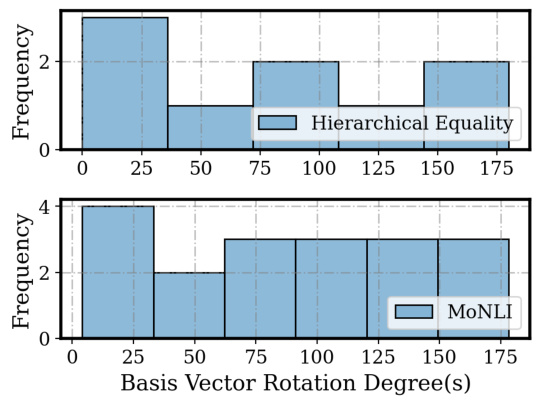
Figure 5: Rotation measured in degree(s) of eigenvectors of the learned rotation matrix for each task.
Yes. We use the trainable orthogonal matrix implementation from PyTorch’s torch.nn.utils. parametrizations. It guarantees the resulting matrix is orthonormal when the rotation matrix is a full square matrix. Keeping the matrix orthonormal is crucial since it ensures we focus on rotation rather than scaling. Details can be found at https://pytorch.org/docs/stable/generated/ torch.nn.utils.parametrizations.orthogonal.html.
How stable is the optimization process of the orthogonal matrix?
We rely on the default initialization of the orthogonal matrix in pytorch. The initialization step is important for finding the local optimal of the rotation matrix. In our experiment, we use random seeds and pick the best results out of our distinct runs to address this issue. However, we may consider different initialization schemes in the future.
Is an orthogonal matrix required to find distributed alignments?
In principle, the transformation is not required to be an orthogonal matrix. In fact, an orthogonal matrix assumes a linear transformation before aligning with a high-level variable, which may not be optimal if the aligning variable is represented in a non-linear sub-manifold of the representation space. In such cases, an orthogonal transformation results in imperfect interchange intervention accuracy, and an invertible and differentiable non-linear transformation may be more suitable (e.g., normalizing flow or invertible neural network). In practice, this transformation is computationally difficult to find, and the linear connections within neural networks also make them unlikely to be required to find alignments. We leave these investigations to future works.
What are the prerequisites to deploy this analysis method in practice?
We assume a partial or complete causal graph of the data generation process. Specifically, we assume to have interchangeable high-level variables defined for the causal graph. Additionally, we
assume we can sample counterfactual data (i.e., base and source inputs where they differ in values of high-level variables) based on the causal graph.
How to interpret the result if the interchange intervention accuracy is not 100%?
When IIA is α ă100%, we rely on the graded notion of α-on-average approximate causal abstraction Geiger et al. (2023), which directly coincides with IIA. More importantly, the relative IIA rankings between the high-level models also show which high-level model is a better approximation of the low-level model.
Does DAS scale with large foundation models?
Currently, the number of learnable parameters of the rotation matrix groups in polynomial time with the size of hidden representations. For instance, if our intervention site size is 512 in the lower-level model, the number of parameters of the rotation matrix is 512 ˆ 512, which is about 0.26M. If we want to rotate concatenated token sequence embeddings of a BERT-BASE model in any layer, the number of parameters of the full rotation matrix is about 15.4B which becomes intractable for standard training infrastructure. To make computation tractable, DAS should be further reducible by representing only the aligned subspace, not the full rotation matrix. For instance, to find a 2-dim distributed representation within a 512-dimensional representation space, we approximately only need to learn 512 ˆ 2 parameters. In addition, we may use a low-rank approximation of the rotation matrix.
What are some practical usage of DAS?
Practically, DAS transforms representations into an operatable state where interchange intervention results in interpretable model behaviors. DAS, itself, is a powerful tool for conducting causal abstraction analysis of a neural network.
Appendix E. Task Performance & Interchange Intervention Accuracy Over Training Epochs
We additionally measure task performance (Task Acc.) as well IIA (Int. Acc.) of our alignments over training epochs for both seen training examples as well as unseen testing examples. Our results are shown from Figure 6 to Figure 11.
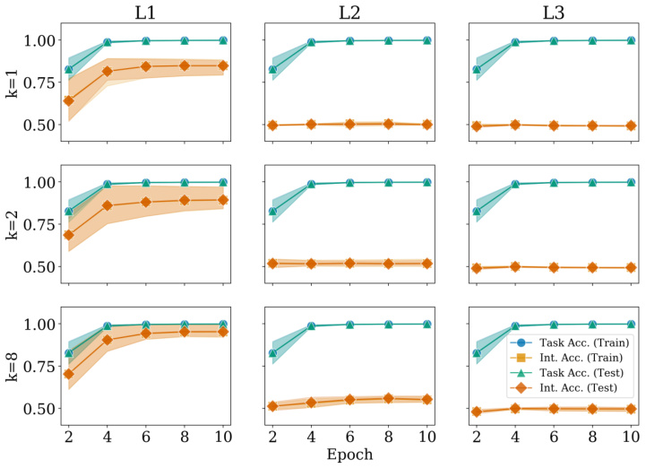
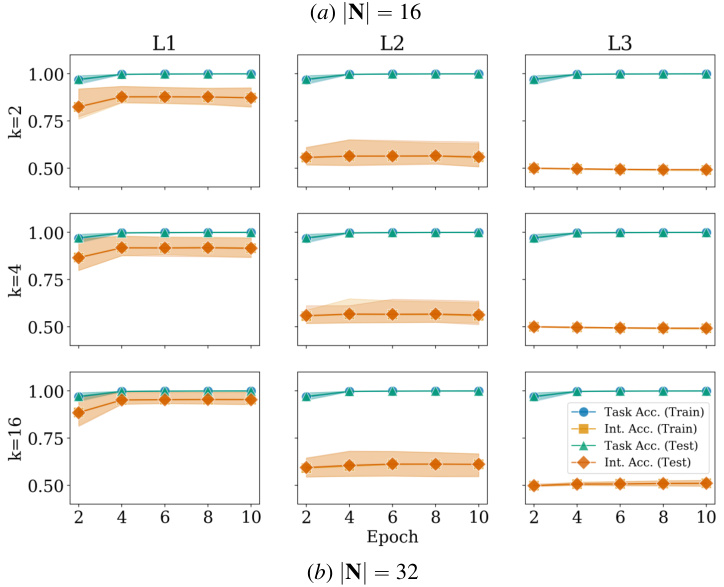
( a ) | N | “ 16
( b ) | N | “ 32
Figure 6: Accuracy over training epochs of the high-level model abstracting both equality relations for hierarchical equality experiment.
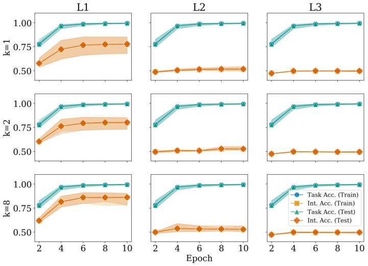
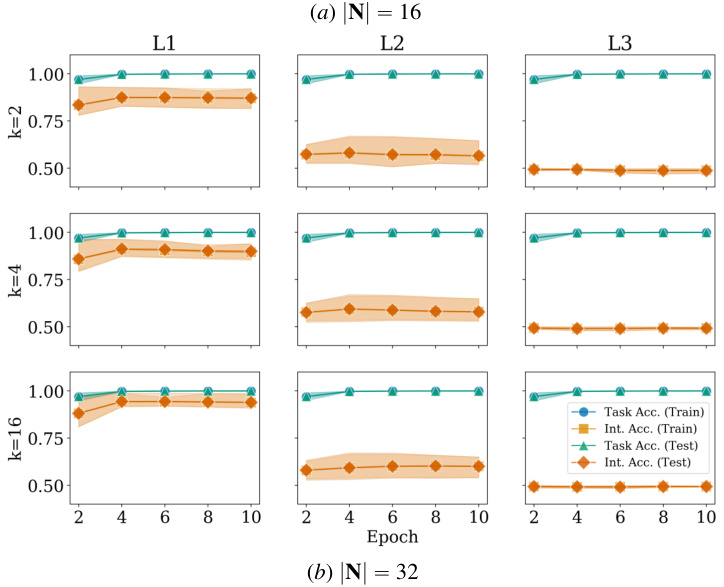
( a ) | N | “ 16
( b ) | N | “ 32
Figure 7: Accuracy over training epochs of the high-level model abstracting left equality relation for hierarchical equality experiment.
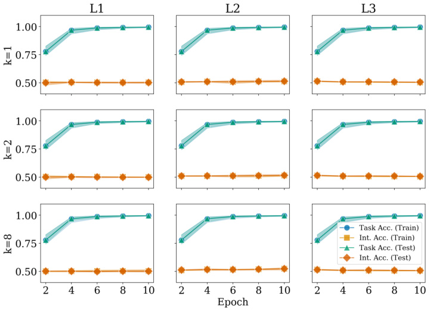
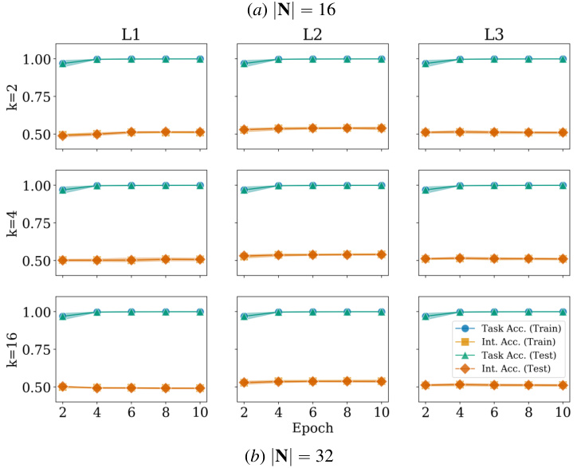
( a ) | N | “ 16
( b ) | N | “ 32
Figure 8: Accuracy over training epochs of the high-level model abstracting identity of first argument for hierarchical equality experiment.
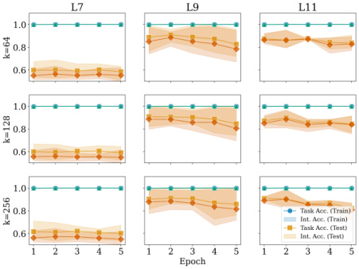
Figure 9: Accuracy over training epochs of the high-level model abstracting both negative and lexical entailment with | N | “ 768 for monotonicity NLI experiment.
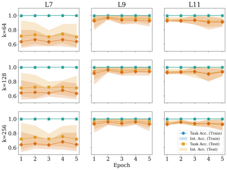
Figure 10: Accuracy over training epochs of the high-level model abstracting lexical entailment with | N | “ 768 for monotonicity NLI experiment.
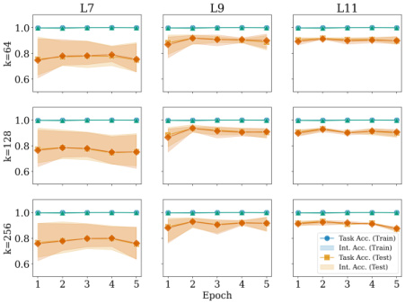
Figure 11: Accuracy over training epochs of the high-level model abstracting the identity of lexeme with | N | “ 768 for monotonicity NLI experiment.